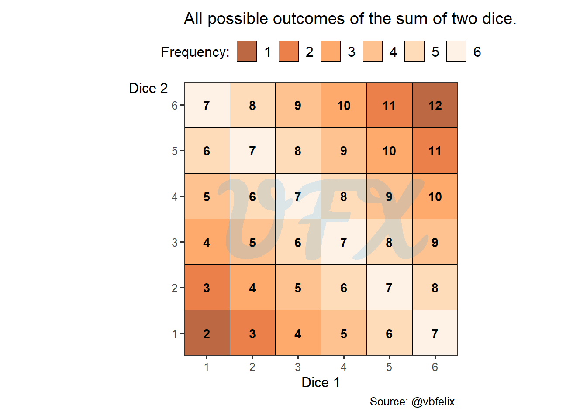
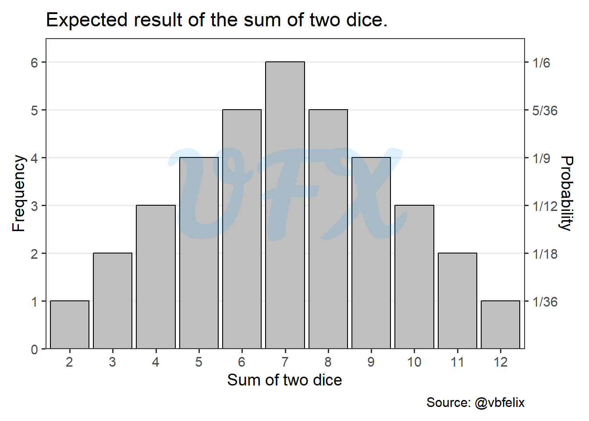
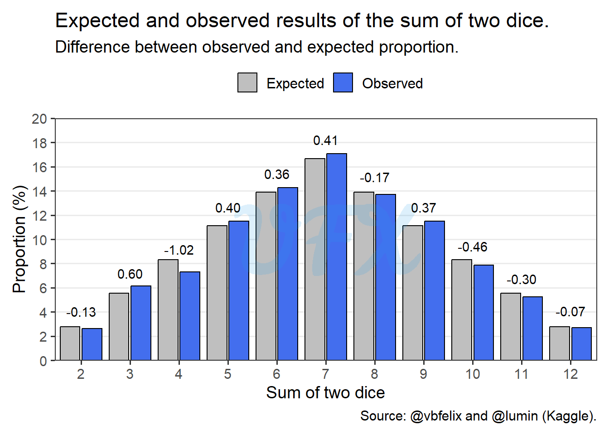
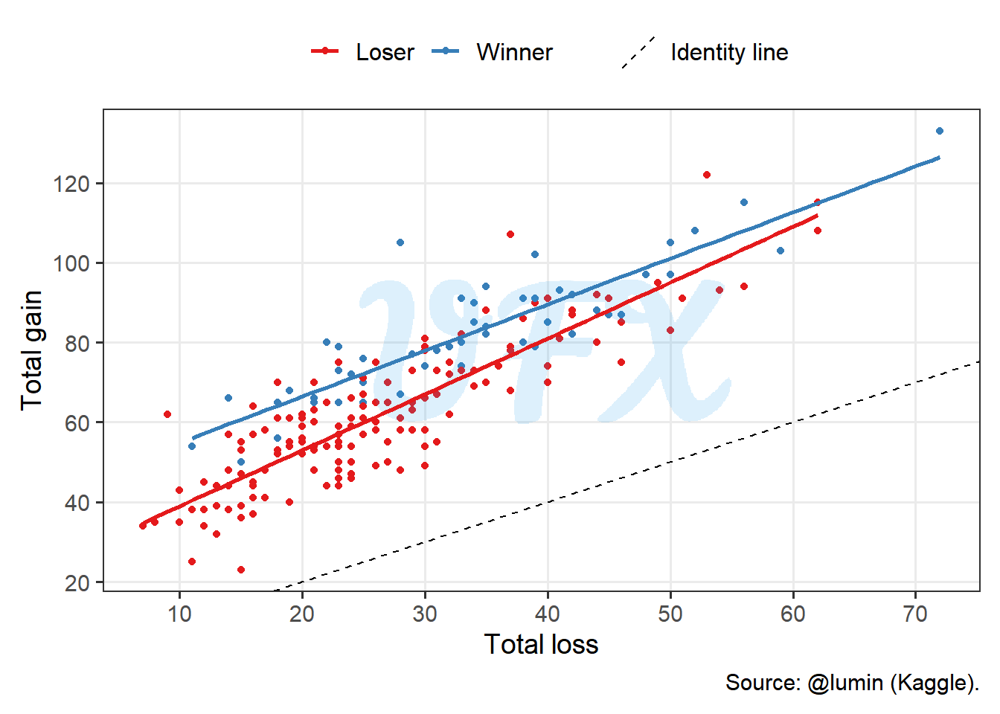
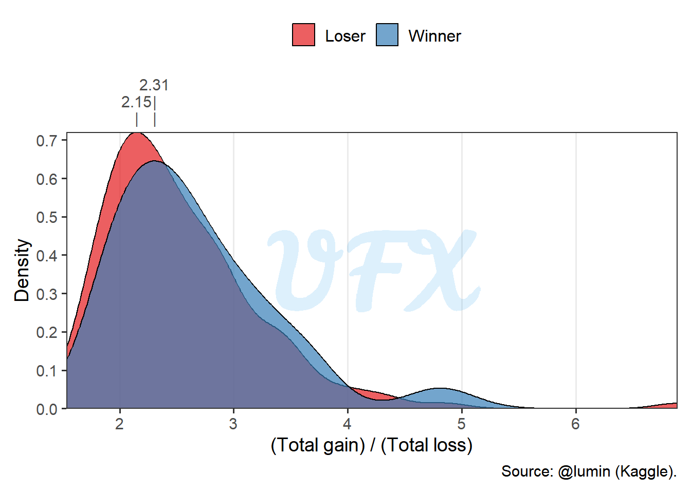
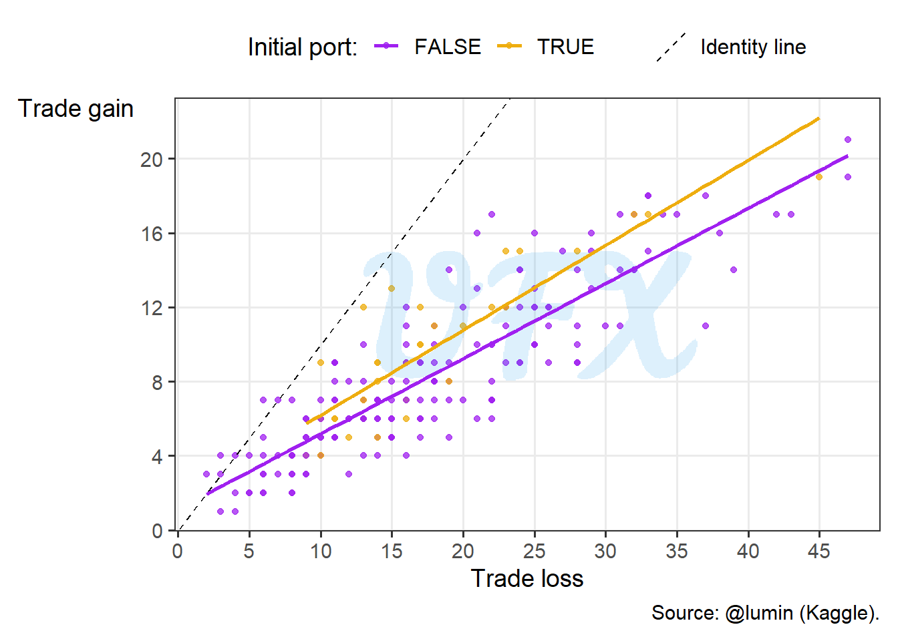
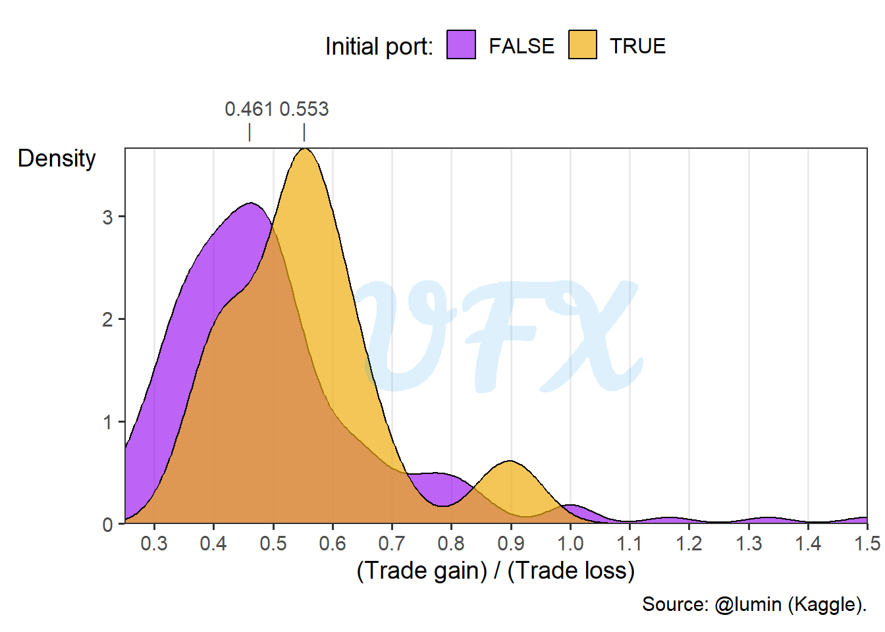
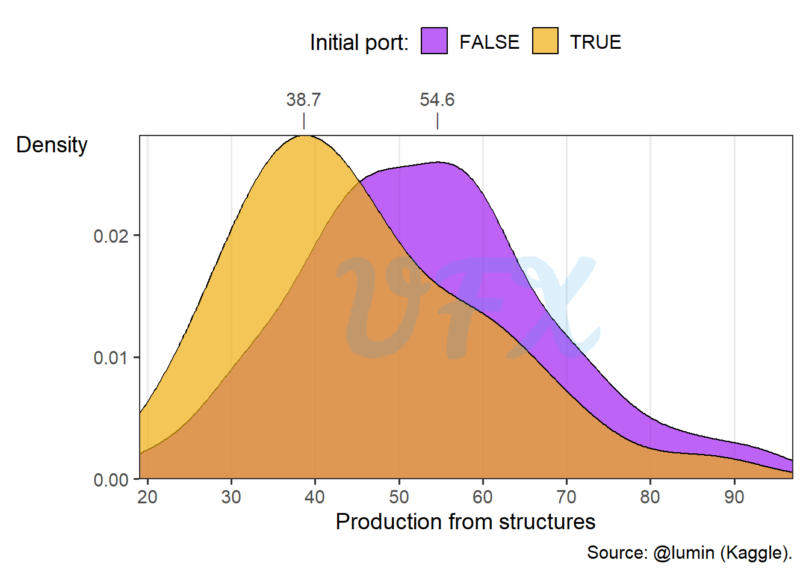

In this post you will learn how statistics and probability can help you to win a board game.
Context
Settlers of Catan, or just Catan is a board game designed by Klaus Teuber. In the game we take the role of settlers.

The game has 19 locations, where:
| Location | Resource | Number of locations |
|---|---|---|
| Pasture | Wool | 4 |
| Hill | Brick | 3 |
| Mountain | Ore | 3 |
| Field | Grain | 4 |
| Forest | Lumber | 4 |
| Desert | None | 1 |
With the exception of the desert, each location will have a number. This number is one of the possible outcomes of the sum of two dice, so they can range from 2 to 12. The number 7 will result in the action of the robber, where you can choose to block one location and steal one random resource from a player who is present there.
The main goal of the game is to achieve 10 points (P), to achieve points we have structures:
Road: 1 brick + 1 lumber;
(1P) Settlement: 1 Brick + 1 lumber + 1 wool + 1 grain;
(2P) City: 3 ores + 2 grains.
We also have the development card: 1 ore + 1 wool + 1 grain, which you draw randomly from a deck of cards with different effects, one of them been cards that award you 1P.
And lastly, achievements:
(2P) Longest road: the player that first achieve a sequencial road of size 5;
(2P) Largest army: the player that first uses 3 knight cards (development card).
For more in-depth information check the rules in the official site.
Analysis
For the analysis we will use the dataset My Settlers of Catan Games from the user Lumin of Kaggle.
Disclaimer: this dataset has only 50 observations, with one of the players always being the same, and with a winrate of 50%, so the goal here is simply to look at the data and check some hypotheses, rather than to do an inference or study about the game.
Is the dice fair?
Every turn, each player rolls two dice and adds their totals together to determine which location will grant resources to players who have cities or settlements there. This will be the subject of the first analysis.
We will compute the probability of each result for the sum of the two dices, taking into account that there are six possible outcomes for each face of each die.

In the picture above, we can see a graph where each axis represents the outcome of a single die, and we can also see all possible outcomes of the sum of those dices.
Some outcomes are more common than others, for example, the number 7 is the most common outcome because it appears six times.
Another intriguing finding is that the results exhibit symmetry; to further explore this, let’s use another visual representation.

The extreme results, 2, and 12, with only one combination for each, are symmetrical and center on the number 7, as was previously mentioned.
We will now compare the observed data to the predicted result.

When comparing the observed values from the real dataset, we can see that the dice results appear to be fairly random because they closely resemble our anticipated result. The number 4 had the biggest discrepancy, with observed values 1.02 percentage points below the predicted probability.
“Spending money to make money.”
In the dataset we have the following concepts, as described by the author:
Production gain: Cards gained from structures;
Trade gain: Cards gained from peer or bank trade;
Non-production gain: Cards gained from stealing with the robber, plus cards gained with non-knight development cards, e.g., a road building card is +4 resources;
Total gain: Production + Trade + Non-production;
Also we have the ways to loss cards
Trade loss: Cards lost from peer or bank trades;
Robber loss: Cards lost directly from robbers, knights, and other players’ monopoly cards;
Tribute loss: Cards lost when player had to discard on a 7 roll;
Total loss: Trade + Robber + Tribute.
First of all, let’s see how the total gain and loss relate.

We see in the figure above that:
The loss and gain are positive correlated, that means that players that gained more also lost more cards;
There is no player that lost more than gained, as no point is below the identity line;
The winners gained a lot more cards than player that lost.
To take a better look at the third point, let’s plot the gain/loss cards ratio.

Looking at the gain/loss ratio density plot, we see that:
The density is positive skewed, for winners or losers;
The losers have a more concentrated density, using the peak value of the density as a metric, winners gain 2.31 cards to every card lost, whereas losers gain 2.15 cards.
“The last will be first, and the first last.”
The playing order is important in this game because it gives you the ability to choose the locations of your settlement, but being the last one is not the worst, since you become the first to choose your second settlement in the map.
To make the analysis of the importance of the locations choosen, we will use the dice sum results and define as weights, e.g., if the number is 12 the weight will be 1, since the the probability of this results is 1/36, as we saw in the dice analysis.
Then we will sum the weights of the initial two settlements of each player (\(wt\)), and we will do the different of the total weight of the winner minus the maximum weight of that game, given by:
\[ wt_{\mathrm{winner}} - \max(wt). \]
| Difference | Frequency |
|---|---|
| -5 | 1 |
| -4 | 5 |
| -3 | 8 |
| -2 | 8 |
| -1 | 4 |
| 0 | 24 |
A difference of zero means that the winner was the player with the best location, at least probability-wise. So in almost half of the games the winner had the best location.
“If your ship doesn’t come in, swim out and meet it.”
The port is a unique location. Normally, you can exchange 4 identical resources for another resource at the bank, but with a port you can lower this trade rate, but you lose one resource location in the process.
| Location | Locations | Percentage |
|---|---|---|
| Port | 35 | 2.92 |
| Resource | 1,165 | 97.08 |
| Total | 1,200 | 100.00 |
So of all the 1,200 initial settlements just 35 of them were ports, so it is not a popular strategy.
| Player | Games | Percentage |
|---|---|---|
| Loser | 27 | 81.82 |
| Winner | 6 | 18.18 |
| Total | 33 | 100.00 |
Those 35 port initial locations were in 33 games, where in only 6 of them the player was the winner, let’s explore why.

Looking at the trading behavior we see that in average player with a initial port gained more, so let’s take a look at the trade ratio (gain/loss).

Players that had a initial port had a higher ratio, that can sound counterintuitive, since we expect they had a better trade-off with the ports advantage, a possibility is the lower quantity of resources making the players make actually worst trade for other resources, since they give up one location when choosing this strategy, but how impactful is that?

Lastly, when can see how impactful was the production of cards from structures based on the initial port. The result was a lot lower for players with a initial port, with almost 16 cards of difference from players that choosed 3 resources locations.